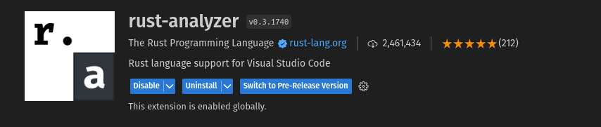
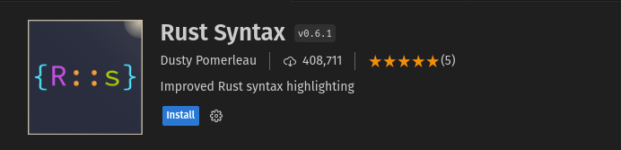
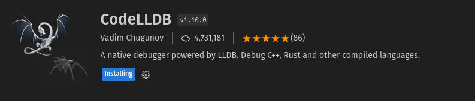

Rust Workshop
This is the official book for the rust workshop happening at Kathmandu University. Here you will find written guides for all the stuff we talk on the sessions.
Get Started
- Get started by installing Rust. Head to Installing Rust
- Each session will also have video, but it will be in Nepali
WIP, the goal of the workshop might change as the workshop moves forward
Resources
- Rust books maintained by the rust-lang.org
- Awesome Rust
- Book of Rust
- Rustonomicon
- Videos by Jon Gjengset
Introductory Rust Resources For Javascript Developers
Introductory Rust Resources For Python Developers
Embedded Resources
Others
What is Rust?
- For Systems Programming
- Targets the same use cases as C/C++ and more
- Compiled Language (uses LLVM-IR)
- Static Typed Language
- Supports many platforms
- x86, ARM, WebAssembly, RISC-V
- Can be used in Desktops, mobiles, routers, servers, etc.
Selling Points of Rust
- Good Tooling
- Great compiler errors
- Built-in support for testing
- Nice LSP (Language Server Protocol)
- Cargo: The Rust package Manager and Build system
Memory Safety
- Ensures safety through compiler enforcement
- No null pointers, no dangling pointers
- No data races in concurrent situations inside safe code
- Concept of ownership and borrowing ensures memory safety at compile time
Memory Management
- Resources managed through RAII (Resource Acquisition Is Initialization)
- Explicit heap allocation with 'Box'
Rust Code Examples
Hello World
fn main() { println!("Hello world"); }
FizzBuzz
fn main() { for num in 1..=100 { match (num % 3, num % 5) { (0, 0) => println!("FizzBuzz"), (0, _) => println!("Fizz"), (_, 0) => println!("Buzz"), _ => println!("{}", num), } } }
Rust vs. C++
The following C++ code compiles but it doesn't work as intended. can you guess the output?
-
C++ Code
#include <iostream> #include <vector> #include <string> int main() { std::vector<std::string> data; data.push_back("hello"); std::string &adt = data[0]; data.push_back("world"); std::cout << adt; return 0; }If you went through the code then one thing you will see is that the output is blank. The main reason is that
std::vectorwhich is a dynamically sized array. We haven't explicitly provided the size nor the contents for the vector so it starts with size of1. As you start adding more than one items in array, the array has to be resized. Vector in C++ resizes by creating a new array with size greater than the current one, and then copies the contents of existing array to new one.&adtstores the reference to the first element in the array, However line below it causes the array to resized. The resizing operation causes the internal array address to be changed, as the existing array is copied to new array with bigger size, and the existing array contents are deleted. This means the address thatadtholds, if you dereference it, it will contain nothing. So the output will be blank -
Rust Equivalent
fn main() { let mut data: Vec<&str> = Vec::new(); data.push("Hello"); let adt = &data[0]; data.push("World"); println!("{adt}"); }This code doesn't compile on Rust, because if you have a reference to something and if you try to modify the content before discarding the reference then the reference might not be memory safe so Rust doesn't allow you.
Advanced Topics in Rust
- Move Semantics
- Borrowing and Borrow Checker
- Algebraic Data Types / Enums
- Zero Cost Abstraction
- Pattern Matching
- Generics
- Safe and correct memory management, without a garbage collector
Rust Build System and Package Manager
- Cargo Commands
- Scalar Types
- Compound Types
Rust in Action
- Writing an OS in Rust: Phil-Opp's Blog
- Kernel Driver with Rust: Kernel Driver Tutorial
Real World Rust Projects
- Tor's implementation in Rust ("arti")
- Dropbox's file sync engine
- Figma's Multiplayer Server
- Coursera's grading Server
Rust as a System Language
- Low level control
- Unsafe blocks
- Foreign function interface
- Inline assembly
- Zero Cost abstractions
- Pointer Types
Click the guide depending on the operating system you use
If you face any problem while installing, you can ask on discord, or google
Installing Rust on Windows
Step 1: Download and Run the Installer
- Go to the official Rust website: https://www.rust-lang.org/.
- Click on the "Install" button.
- Download the Windows installer (usually a
.exefile).
Step 2: Run the Installer
- Run the installer you downloaded.
- Follow the installation prompts. You can choose the default settings for most options.
Step 3: Verify the Installation
- Open a Command Prompt or Powershell window.
- Type
rustc --versionand press Enter. You should see the Rust version number, indicating a successful installation.
Install Rust on Windows without Installing Visual C++ Build Tools
Installing Rust on Linux and Mac OS
Step 1: Install Rust via Rustup (Recommended)
-
Open a Terminal.
-
Run the following command to download and install Rust using Rustup:
-
curl --proto '=https' --tlsv1.2 -sSf https://sh.rustup.rs | sh
Step 2: Follow the Installation Prompts
- Follow the prompts to customize your Rust installation if needed. The default options are usually fine.
Step 3: Configure Rust Environment
-
After installation, Rustup will provide instructions for setting up your environment. Follow these instructions. It typically involves running a command like:
bash
-
source $HOME/.cargo/env
Step 4: Verify the Installation
- In the Terminal, type
rustc --versionand press Enter. You should see the Rust version number, confirming a successful installation.
If you haven't set up editor yet, then i suggest you to download Visual studio Code(VSCode). Download it from their website https://code.visualstudio.com/ Once downloaded here is how you set it up for Rust.
Setting up Editor for Vscode
- Install Rust Analyzer Extension

- Open VSCode.
- Go to the Extensions view by clicking on the Extensions icon in the sidebar or pressing
Ctrl+Shift+X. - Search for "rust-analyzer" in the Extensions Marketplace.
- Install the extension
Rust analyzer has features like code completion, goto definition, finding references , inlay hinting that makes your editor a Rust Development Environment
-
Other extensions you can install
- Rust Syntax : Better Rust syntax highlighting

- Crates : Makes Managing dependencies easier
- CodeLLDB : To debug Rust code

Create a New Project:
-
In Rust, projects are organized into packages and crates. You can start by creating a new Rust project using the
cargotool, which comes with Rust. -
Open your terminal and navigate to the directory where you want to create your project. If you are on windows then use
powershellcargo new hello_worldThis command will create a new directory called
hello_worldwith the necessary project structure. -
Edit the Main File:
- Navigate into the
hello_worlddirectory:
- Navigate into the
cd hello_world
-
Inside this directory, you'll find a file named
main.rs. Open this file in a text editor of your choice. If you use vscode, then you can open the folder in vscode from terminal withcode . -
Replace the existing code with the following Hello program:
fn main() {
println!("Hello, 🇳🇵!");
}
This code defines a `main` function, which is the entry point of your Rust program. It uses the `println!` macro to print "Hello, 🇳🇵!" to the console.
-
Build and Run:
- Now, you can build and run your Rust program using
cargo. In your terminal, run:cargo run
This command will compile and execute your Rust program. You should see the output "Hello, 🇳🇵!" displayed in the terminal.
- Now, you can build and run your Rust program using
This simple program confirms that your Rust development environment is set up correctly and ready for more advanced development.
fn main() { println!("Hello, World!"); }
-
fn main() { ... }: This is the entry point of the Rust program. In Rust, every program must have amainfunction. When you run your program, the code insidemainis executed first. -
println!("Hello, World!");: This is the main part of the program that prints the "Hello, World!" message to the console. Here's what's happening here:-
println!: This is a Rust macro for printing text to the console. Macros in Rust are like functions but with an exclamation mark (!) at the end. -
"Hello, World!": This is the message that theprintln!macro will print. It's enclosed in double quotes to indicate that it's a string of characters. -
;(semicolon): This is the statement terminator in Rust, indicating the end of this line of code. Rust uses semicolons to separate statements.
-
So, when you run the program, the main function is called, and it, in turn, calls println!("Hello, World!");, which prints "Hello, World!" to the console.
Extracted from : https://google.github.io/comprehensive-rust/why-rust/an-example-in-c.html
Here is the C code with many bugs. Try finding it
#include <stdio.h>
#include <stdlib.h>
#include <sys/stat.h>
int main(int argc, char* argv[]) {
char *buf, *filename;
FILE *fp;
size_t bytes, len;
struct stat st;
switch (argc) {
case 1:
printf("Too few arguments!\n");
return 1;
case 2:
filename = argv[argc];
stat(filename, &st);
len = st.st_size;
buf = (char*)malloc(len);
if (!buf)
printf("malloc failed!\n", len);
return 1;
fp = fopen(filename, "rb");
bytes = fread(buf, 1, len, fp);
if (bytes = st.st_size)
printf("%s", buf);
else
printf("fread failed!\n");
case 3:
printf("Too many arguments!\n");
return 1;
}
return 0;
}
Can you find all the bugs? There are 11 of them
- Assignment
=instead of equality comparison==(line 28) - Excess argument to
printf(line 23) - File descriptor leak (after line 26)
- Forgotten braces in multi-line
if(line 22) - Forgotten
breakin aswitchstatement (line 32) - Forgotten NUL-termination of the
bufstring, leading to a buffer overflow (line 29) - Memory leak by not freeing the
malloc-allocated buffer (line 21) - Out-of-bounds access (line 17)
- Unchecked cases in the
switchstatement (line 11) - Unchecked return values of
statandfopen(lines 18 and 26)
try copying and running it online on online GDB. It will compile fine. But these are all serious bugs, how come the compiler accepts just like that.... and these errors are serious
- Assignment
=instead of equality comparison==: The Linux Backdoor Attempt of 2003 - Forgotten braces in multi-line
if: The Apple goto fail vulnerability - Forgotten
breakin aswitchstatement: The break that broke sudo
How can Rust be better here?
- Assignments inside an
ifclause are not supported. - Format strings are checked at compile-time.
- Resources are freed at the end of scope via the
Droptrait. - All
ifclauses require braces. match(as the Rust equivalent toswitch) does not fall-through, hence you can’t accidentally forget abreak.- Buffer slices carry their size and don’t rely on a NUL terminator.
- Heap-allocated memory is freed via the
Droptrait when the correspondingBoxleaves the scope. - Out-of-bounds accesses cause a panic or can be checked via the
getmethod of a slice. matchmandates that all cases are handled.- Fallible Rust functions return
Resultvalues that need to be unwrapped and thereby checked for success. Additionally, the compiler emits a warning if you miss to check the return value of a function marked with#[must_use]
Some snippets that will help you understand Rust code and some Rust fundamentals along the way
let introduces variable binding.
#![allow(unused)] fn main() { let a = 42; }
Since Rust is statically typed language, which means you have to specify the type of variable. i.e if it is storing strings, or integers or floating numbers or your own data type
#![allow(unused)] fn main() { let a: i32 = 12; // 32 bit integer let b: &str = "Hello nepal"; //str let c: char = 'a'; //char let d: bool = true; let e: f32 = 3.1415; let c: u32 = 32; //32 bit integer but you can't store negative numbers }
Rust can implicitly identify your variable type based upon the content you are passing to variable.
#![allow(unused)] fn main() { let a = 12; // automatically assigned to i32 }
To print something to console, you just use
#![allow(unused)] fn main() { println!("Hello world"); }
to print the contents of the variable you can
#![allow(unused)] fn main() { let age : i32 = 21; println!("Hello, my age is {}", age); // or you can also println!("Hello, my age is {age}"); }
Notice that exclamation mark at the end. it means it is Rust macros .
Rust variables are immutable by default which means, you can't change the content of the variable once you assign something to it.
#![allow(unused)] fn main() { let age : i32 = 21; age = 22; // error this won't work, because age is immutable }
You can shadow a variable bindings
#![allow(unused)] fn main() { let x = 17; let x = "awesome"; // x is not mutable, but we re-binded it }
You can also use patterns to declare variables
let (a,b) = ("Nepal GPO sucks",12);
You have to explicitly use the keyword mut to make it re-assignable
#![allow(unused)] fn main() { let mut age: i32 = 21; age = 22; // valid because we used mut keyword }
Now similarly generate small snippets and information combination for conditionals, loops, match, struct, vector, array, tuples and so on
Comments
/// Triple-slash comments are docstring comments.
///
/// `rustdoc` uses docstring comments to generate
/// documentation, and supports **Markdown** formatting.
fn foo() {
// Double-slash comments are normal.
/* Block comments
* also exist /* and can be nested! */
*/
}
Conditionals
In Rust, you can use if, else if, and else statements for conditionals.
#![allow(unused)] fn main() { let number = 7; if number < 5 { println!("Condition is true"); } else if number == 7 { println!("Number is seven"); } else { println!("Condition is false"); } }
Arrays
- Arrays are generically of type
[T; N].- T is type, can be &str, char, bool, i32 etc
- N is a compile-time constant. Arrays cannot be resized.
- Array access is bounds-checked at runtime.
- Arrays are indexed with
[]arr[3]gives you the 4th element ofarr
let arr1 = [1, 2, 3]; // (array of 3 elements)
let arr2 = [2; 32]; // (array of 32 `2`s)
let arr2: [u8;4] = [12,32,73,11]; // (array of 4 8-bit integers that can only accept positive numbers)
Slices
You create a slice of array and it is in format &[T]. They are reference to your arrays, and you can take specific section of your arrays with slices too.
let arr = [0, 1, 2, 3, 4, 5];
let total_slice = &arr; // Slice all of `arr`
let total_slice = &arr[..]; // Same, but more explicit
let partial_slice = &arr[2..5]; // [2, 3, 4]
Strings
There are two types of strings.String and &str. Strings are growable set of characters. Basically you can think of it as dynamic array of characters. &str is the slice of String which means they are fixed. For more information look to stack vs heap, to understand the difference between String and &str.
When you use literals in your program, compiler automatically assumes it is of type &str
#![allow(unused)] fn main() { let a = "Nepal's General post office is why i hate government work"; // this is of type &str let b = String::from("Foo"); //this is of type String let s4: &str = &b; }
Vector
Vec<T> are resizable arrays. <T> denotes the generic type, so we pass the type from there.
#![allow(unused)] fn main() { let mut v: Vec<i32> = Vec::new(); // Declare a new vector v.push(5); v.push(6); v.push(7); }
Shortcut method to create vector
let v2 = vec![1,2,3];
Vectors can be indexed with [], but you have to use usize.
let v2 = vec![1,2,3];
let i: u8 = 2;
// let d = v2[i]; // error as i should be of type usize
let d = v2[i as usize]; // casting
Loops
Rust provides several types of loops, including loop, while, and for.
Infinite Loop
#![allow(unused)] fn main() { loop { println!("This will loop forever until explicitly broken!"); break; // Use break to exit the loop } }
While Loop
#![allow(unused)] fn main() { let mut count = 0; while count < 5 { println!("count: {}", count); count += 1; } }
For Loop
#![allow(unused)] fn main() { for number in 1..4 { // 1..4 is a range (1,2,3) println!("number: {}", number); // you can break and continue too } }
notice that 1..4. It is a range. The syntax is start..end , Some operation on ranges
#![allow(unused)] fn main() { // including all the endpoints of range let include_all = (1..=4); // 1,2,3,4 // reversing let reversed = (1..4).rev(); // 3,2,1 // convert range to vector let numbers = (1..4).collect::<i32>(); // collect 1,2,3,4 as 32 bit integer // or let numbers: Vec<i32> = (1..4).collect(); //skip let skipped_val = (1..10).skip(2); //1,3,5,7,9 // explore enumerate(), iter(), take() by yourself }
Everything is expressions (almost)
Expressions return a value. So Expressions are something that returns value, can't get simpler than that.
We can bind many things to variable name, because everything is expression. The rule is, if it's expression then we can bind it to a variable.
let x = -5;
let y = if x > 0 { "greater" } else { "less" };
println!("x = {} is {} than zero", x, y);
Struct
Structs are used to create custom data types.
#![allow(unused)] fn main() { struct User { username: String, email: String, sign_in_count: u64, active: bool, } let user1 = User { email: String::from("coldplay@gmail.com"), username: String::from("yellow"), active: true, sign_in_count: 1, }; }
Tuples
Tuples are fixed-size collections of multiple types.
#![allow(unused)] fn main() { let tup: (i32, f64, u8) = (500, 6.4, 1); let (x, y, z) = tup; // Destructuring println!("The value of y is: {}", y); }
Functions
Functions in Rust are defined using the fn keyword, with typed parameters and an optional return type.
#![allow(unused)] fn main() { fn square(n: i32) -> i32 { n * n // no need to type return // if there is no semicolon at the end then it means it returns that value } fn squareish(n: i32) -> i32 { if n < 5 { return n; } // if you want to return early then use return keyword n * n } fn greet(name: &str) { println!("Hello, {}!", name); } greet("Alice"); }
You can store functions in variable
let x : fn(i32) -> i32 = square;
fn do_it_two_times(f: &fn(i32) -> i32, x: i32 ) -> i32 {
f(f(x))
}
let y = do_it_two_times(&square, 5);
Match
match is similar to switch cases in other languages, but more powerful.
#![allow(unused)] fn main() { let number = 2; match number { 1 => println!("One"), 2 => println!("Two"), 3 => println!("Three"), _ => println!("Anything else"), // '_' is the default case } }
you can match with range
#![allow(unused)] fn main() { let number = 13; match number { 1..=5 => println!("It's between 1 and 5"), 6..=10 => println!("It's between 6 and 10"), _ => println!("It's something else"), } }
you can add guards to match
#![allow(unused)] fn main() { let number = 4; match number { n if n % 2 == 0 => println!("Even number"), n if n % 2 != 0 => println!("Odd number"), _ => println!("It's something else"), } }
you can match with Enums too, see below examples
Enums
Enums are a way to define a type by enumerating its possible values.
#![allow(unused)] fn main() { enum Direction { Up, Down, Left, Right, } fn move_direction(direction: Direction) { match direction { Direction::Up => println!("Moving up"), // Other directions... } } }
Enums in Rust can also have data associated with their variants. This feature can be particularly useful for representing more complex scenarios like error handling or state management.
#![allow(unused)] fn main() { enum AppState { Loading, Content(String), Error(String), } fn get_app_state(loading: bool, has_error: bool) -> AppState { if loading { AppState::Loading } else if has_error { AppState::Error(String::from("An error occurred")) } else { AppState::Content(String::from("Content loaded successfully")) } } let state = get_app_state(false, true); match state { AppState::Loading => println!("App is loading..."), AppState::Content(content) => println!("Content: {}", content), AppState::Error(error) => println!("Error: {}", error), } }
This example shows an AppState enum with different variants for loading, content, and error states. The match statement then handles each state accordingly.
Rust's Option and Result types are actually enums under the hood. Understanding the basic enum concept can help grasp these types better.
Option<T>can be eitherSome(T)orNone.Result<T, E>can be eitherOk(T)for success orErr(E)for an error.
Here's a simplified version of how they might be defined:
#![allow(unused)] fn main() { enum Option<T> { Some(T), None, } enum Result<T, E> { Ok(T), Err(E), } }
#![allow(unused)] fn main() { fn divide(numerator: f64, denominator: f64) -> Option<f64> { if denominator == 0.0 { None } else { Some(numerator / denominator) } } let result = divide(10.0, 2.0); }
As written above, Result<T, E> is used for error handling. It returns Ok(value) if successful, or Err(error) if an error occurs.
#![allow(unused)] fn main() { fn check_age(age: i32) -> Result<(), String> { if age >= 18 { Ok(()) } else { Err(String::from("Underage")) } } let age_check = check_age(20); }
Cargo
- Create a new project:
cargo new project_name(library)cargo new project_name --bin(executable)
- Build your project:
cargo build - Run your tests:
cargo test
Cargo.toml
- This is what Rust uses to manage dependencies and project metadata. When you open something like this is shown
[package]
name = "my_project"
version = "0.1.0"
authors = ["Your Name <you@example.com>"]
edition = "2018"
[dependencies]
serde = "1.0"
serde_json = "1.0"
log = "0.4"
- You add crates to your project as dependency
[dependencies]
futures = "0.3" // name = version
- Exact version:
"1.2.3" - Caret version requirements:
"^1.2.3"(default, compatible with public API version 1.2.3) - Tilde version requirements:
"~1.2.3"(version 1.2.3 and the versions up to 1.3.0, not including 1.3.0) - Wildcard version requirements:
"1.2.*"(any version that starts with 1.2)
Stack and Heap
These are memory constructs. There is no specific different hardware for Stack and Heap in RAM. How they are different is how stack and heap are structured in RAM.
Stack stores fixed sized data. Example: i32 is a type in Rust which means signed 32 bit Integer. When you define a variable as i32, then it is stored on a stack because we know the max possible number of bits that it can use, i.e 32 bits. The size is known beforehand. This also means that fetching stuff from memory is fast. Allocation is fast. Deleting is fast becasue we know the size is not going to increase for that particular variable in stack.
and heap stores variable sized data. The size is not known beforehand. The size requirements may increase. So when program is running or during runtime, we must to be increase or decrease the size of that memory portion. Due to this accessing data in heap is slower.
Ownership
Any variable that binds some value to it takes ownership of that data. This basically means a peice of data can only have one owner at a time.
Ownership is Rust claim to fame
#![allow(unused)] fn main() { fn foo() { // Creates a Vec object. // Gives ownership of the Vec object to v1. let mut v1 = vec![1, 2, 3]; v1.pop(); v1.push(4); // At the end of the scope, v1 goes out of scope. // v1 still owns the Vec object, so it can be cleaned up. } }
Why discuss ownership in the first place?
If you boil down everything you do with a programming language , then all you do is define "ways to interact with data". At the core, programming languages are different on the basis of syntax and how they handle your data, how much it trusts you with the data or it questions your memory management skills. The region where your data is stored is Memory. Some language like C++, C and Rust can give access low level access to Memory Region, whereas some languages like Javascript, Python can't provide you with same level of access because the memory management is not up to you.
- Languages like Java, Javascript use something called garbage collector which allows you instantiate or store data in memory but when it comes to cleaning it up once it is of no use then the garbage collector will help you cleaning up.
Garbage collection is expensive.
Garbage collector(GC) is also a piece of code, that cleans up your mess, which means when you build your executable file, the GC code also has to be included. It also has to check from time to time if certain data can be freed or not. That constant checking and cleaning is a overhead, that makes your program slow. The extra code that you include is also overhead that makes your program size large.
Manual Memory management
programming languages like C, C++ allow you to do your manual memory management. It completely trusts the developer. But this introduces problems. When a piece of memory that needed to be freed is not freed then there is memory leakage. Or what if we delete a piece of memory before it is used? It will lead to Dangling pointers. those pointers will assume that they still have correct data in memory. It is not memory safe
Rust to the rescue
Ownership is Rust’s most unique feature and has deep implications for the rest of the language. It enables Rust to make memory safety guarantees without needing a garbage collector, so it’s important to understand how ownership works.
Read about Stack vs Heap
Compile Time and Run Time
Compile time is when your code is being converted to executable format. Runtime is when your executable is being run.
- When you introduce a variable binding, it takes ownership of its data. And a piece of data can only have one owner at a time.
- When a variable binding goes out of scope, nothing has access to the data anymore, so it can be released. Which means, if it's on the heap, it can be de-allocated.
- And data must be guaranteed to outlive its references. Or, all references are guaranteed to be valid.
Move Semantics
let v1 = vec![1, 2, 3];
// Ownership of the Vec object moves to v2.
let v2 = v1;
println!("{}", v1[2]); // error: use of moved value `v1`
-
let v2 = v1;- We don't want to copy the data, since that's expensive.
- The data cannot have multiple owners.
- Solution: move the Vec's ownership into v2, and declare v1 invalid.
-
println!("{}", v1[2]);We know that v1 is no longer a valid variable binding, so this is an error. Rust can reason about this at compile time, so it throws a compiler error.
Here's another example:
- Line 1: declare a vector v1.
- Line 2: let v2 = v1. Ownership of the vector is moved from v1 to v2.
- we don't want to move or copy the data, that's expensive and causes other bugs
- we already know the data can't have multiple owners
- Line 3: try to print v1.
- but since the vector has been moved out of v1, it is no longer a valid variable binding
- all of this happens at compile time.
Move Semantics
-
Moving ownership is a compile-time semantic; it doesn't involve moving data during your program.
-
Moves are automatic (via assignments); no need to use something like C++'s
std::move.- However, there are functions like
std::mem::replacein Rust to provide advanced ownership management.
- However, there are functions like
-
Moving ownership is an impliict operation done at compile time. No data is moved or copied around when your program is being run.
-
The movement of data is automatic, you don't need to call anything like std::move (as in C++).
-
But you can do more fine-grained ownership or memory movement with a number of standrard library functions, like std::mem::replace.
Ownership
- Ownership does not always have to be moved.
- What would happen if it did? Rust would get very tedious to write:
#![allow(unused)] fn main() { fn vector_length(v: Vec<i32>) -> Vec<i32> { // Do whatever here, // then return ownership of `v` back to the caller } }
- You could imagine that this does not scale well either.
- The more variables you had to hand back, the longer your return type would be!
- Imagine having to pass ownership around for 5+ variables at a time :(
???
- Ownership doesn't have to be moved.
- If it did, you would also have to return ownership at the end of every function, or have all of your variables constantly going out of scope.
- This gets absurd very quickly, imagine having to return all of your function arguments as return values just to make sure they don't go out of scope.
Borrowing
- Obviously, this is not the case.
- Instead of transferring ownership, we can borrow data.
- A variable's data can be borrowed by taking a reference to the variable;
ownership doesn't change.
- When a reference goes out of scope, the borrow is over.
- The original variable retains ownership throughout.
#![allow(unused)] fn main() { let v = vec![1, 2, 3]; // v_ref is a reference to v. let v_ref = &v; // use v_ref to access the data in the vector v. assert_eq!(v[1], v_ref[1]); }
???
- Obviously, this is not the case in Rust, otherwise the language would be impossible to use.
- Instead, we can temporarily transfer ownership by borrowing data.
- The way that borrowing works is: you can take a reference to the original variable and use it to access the data.
- When a reference goes out of scope, the borrow is over.
- However, the original variable retains ownership during the borrow and afterwards.
Borrowing
- Caveat: this adds restrictions to the original variable.
- Ownership cannot be transferred from a variable while references to it exist.
- That would invalidate the reference.
#![allow(unused)] fn main() { let v = vec![1, 2, 3]; // v_ref is a reference to v. let v_ref = &v; // Moving ownership to v_new would invalidate v_ref. // error: cannot move out of `v` because it is borrowed let v_new = v; }
???
- This adds a caveat: ownership cannot be ransferred from a variable that is currently being borrowed, because that would invalidate the reference.
Borrowing
/// `length` only needs `vector` temporarily, so it is borrowed. fn length(vec_ref: &Vec<i32>) -> usize { // vec_ref is auto-dereferenced when you call methods on it. vec_ref.len() // you can also explicitly dereference. // (*vec_ref).len() } fn main() { let vector = vec![]; length(&vector); println!("{:?}", vector); // this is fine }
- Note the type of
length:vec_refis passed by reference, so it's now an&Vec<i32>. - References, like bindings, are immutable by default.
- The borrow is over after the reference goes out of scope (at the end of
length).
Borrowing
/// `push` needs to modify `vector` so it is borrowed mutably. fn push(vec_ref: &mut Vec<i32>, x: i32) { vec_ref.push(x); } fn main() { let mut vector: Vec<i32> = vec![]; let vector_ref: &mut Vec<i32> = &mut vector; push(vector_ref, 4); }
- Variables can be borrowed by mutable reference:
&mut vec_ref.vec_refis a reference to a mutableVec.- The type is
&mut Vec<i32>, not&Vec<i32>.
- Different from a reference which is variable.
Borrowing
/// `push` needs to modify `vector` so it is borrowed mutably. fn push2(vec_ref: &mut Vec<i32>, x: i32) { // error: cannot move out of borrowed content. let vector = *vec_ref; vector.push(x); } fn main() { let mut vector = vec![]; push2(&mut vector, 4); }
- Error! You can't dereference
vec_refinto a variable binding because that would change the ownership of the data.
Borrowing
- Rust will auto-dereference variables...
- When making method calls on a reference.
- When passing a reference as a function argument.
/// `length` only needs `vector` temporarily, so it is borrowed. fn length(vec_ref: &&Vec<i32>) -> usize { // vec_ref is auto-dereferenced when you call methods on it. vec_ref.len() } fn main() { let vector = vec![]; length(&&&&&&&&&&&&vector); }
Borrowing
- You will have to dereference variables...
- When writing into them.
- And other times that usage may be ambiguous.
#![allow(unused)] fn main() { let mut a = 5; let ref_a = &mut a; *ref_a = 4; println!("{}", *ref_a + 4); // ==> 8 }
ref
#![allow(unused)] fn main() { let mut vector = vec![0]; { // These are equivalent let ref1 = &vector; let ref ref2 = vector; assert_eq!(ref1, ref2); } let ref mut ref3 = vector; ref3.push(1); }
- When binding a variable,
refcan be applied to make the variable a reference to the assigned value.- Take a mutable reference with
ref mut.
- Take a mutable reference with
- This is most useful in
matchstatements when destructuring patterns.
ref
#![allow(unused)] fn main() { let mut vectors = (vec![0], vec![1]); match vectors { (ref v1, ref mut v2) => { v1.len(); v2.push(2); } } }
- Use
refandref mutwhen binding variables inside match statements.
Copy Types
- Rust defines a trait¹ named
Copythat signifies that a type may be copied instead whenever it would be moved. - Most primitive types are
Copy(i32,f64,char,bool, etc.) - Types that contain references may not be
Copy(e.g.Vec,String).
#![allow(unused)] fn main() { let x: i32 = 12; let y = x; // `i32` is `Copy`, so it's not moved :D println!("x still works: {}, and so does y: {}", x, y); }
¹ Like a Java interface or Haskell typeclass
???
This is why we've been using Vectors as examples in this slide set.
Borrowing Rules
The Holy Grail of Rust
Learn these rules, and they will serve you well.
- You can't keep borrowing something after it stops existing.
- One object may have many immutable references to it (
&T). - OR exactly one mutable reference (
&mut T) (not both). - That's it!

Borrowing Prevents...
- Iterator invalidation due to mutating a collection you're iterating over.
- This pattern can be written in C, C++, Java, Python, Javascript...
- But may result in, e.g,
ConcurrentModificationException(at runtime!)
- But may result in, e.g,
#![allow(unused)] fn main() { let mut vs = vec![1,2,3,4]; for v in &vs { vs.pop(); // ERROR: cannot borrow `vs` as mutable because // it is also borrowed as immutable } }
popneeds to borrowvsas mutable in order to modify the data.- But
vsis being borrowed as immutable by the loop!
Borrowing Prevents...
- Use-after-free
- Valid in C, C++...
#![allow(unused)] fn main() { let y: &i32; { let x = 5; y = &x; // error: `x` does not live long enough } println!("{}", *y); }
- The full error message:
error: `x` does not live long enough
note: reference must be valid for the block suffix following statement
0 at 1:16
...but borrowed value is only valid for the block suffix
following statement 0 at 4:18
- This eliminates a huge number of memory safety bugs at compile time.
???
As a side note, this technique of creating a block to limit the scope of a variable (in this case x) is pretty useful.
Example: Vectors
- You can iterate over
Vecs in three different ways:
#![allow(unused)] fn main() { let mut vs = vec![0,1,2,3,4,5,6]; // Borrow immutably for v in &vs { // Can also write `for v in vs.iter()` println!("I'm borrowing {}.", v); } // Borrow mutably for v in &mut vs { // Can also write `for v in vs.iter_mut()` *v = *v + 1; println!("I'm mutably borrowing {}.", v); } // Take ownership of the whole vector for v in vs { // Can also write `for v in vs.into_iter()` println!("I now own {}! AHAHAHAHA!", v); } // `vs` is no longer valid }